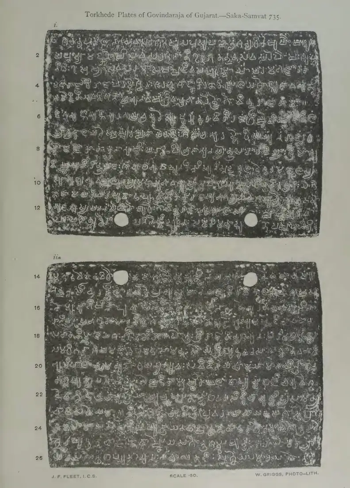
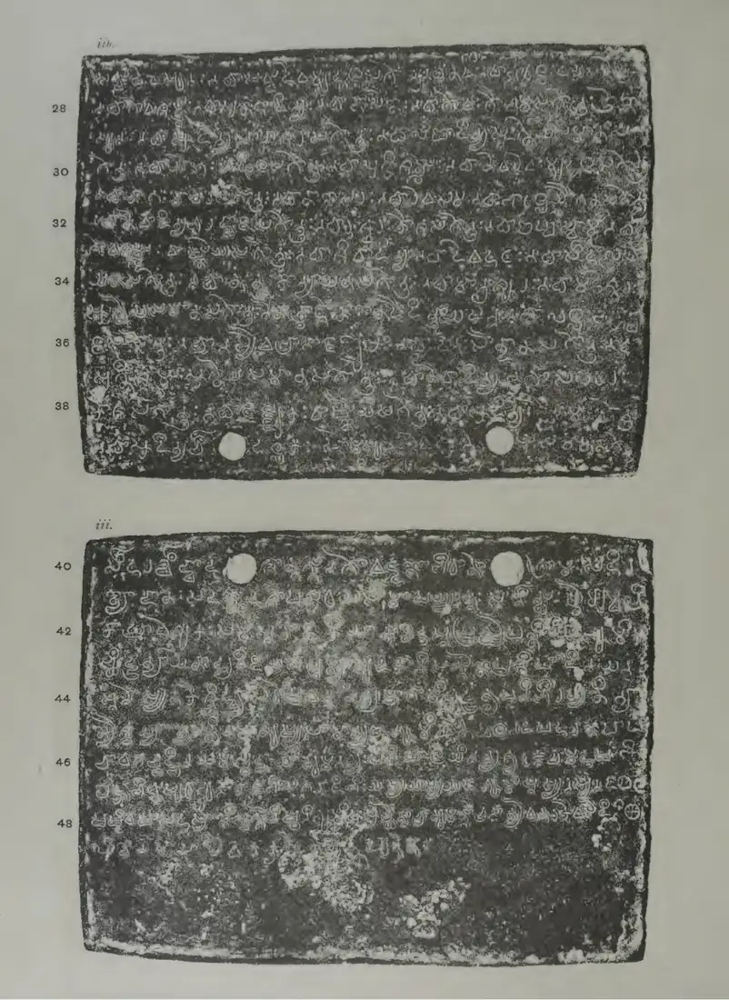

Tôrkhêḍê plates of the time of Gôvindarâja of Gujarât ; Śaka-Saṁvat 735
No. 9.—TORKHEDE COPPER-PLATE GRANT OF THE TIME OF GOVINDARAJA OF GUJARAT.— SAKA-SAMVAT 735.
BY J. F. FLEET, I.C.S., PH.D., C.I.E.
I owe the opportunity of editing this inscription, which is now brought to notice for the first time, to the kindness of Mr. C. G. Dodgson, I.C.S. (Bombay), who sent me the original plates, for examination, in 1891. They were obtained from Dêvarão bin Balwantrão Kadambândê Jâhâgîrdâr, a resident of the village of Tôrkhêdê, in the Shâhâdê Tâlukâ, Khândêsh District.
The plates are three in number, each measuring about by . The edges of them were fashioned somewhat thicker than the inscribed portions, so as to serve as rims to protect the writing; and, though the plates have been a good deal corroded by rust, there are but very few letters which are not in a perfect state of preservation.—The plates are strung on two rings. One of them is about thick; and, though now bent out of shape, was probably originally circular, about in diameter: it has been severed; but it shews indications of having been soldered up, to make an actual ring. The other is about thick: part of it is roughly oval, measuring about by ; and it ends in two straight, pointed extremities, which were intended for soldering into a seal: the total length is about . The seal is not forthcoming.—The weight of the three plates is 434 tolas; and of the two rings, tolas: total, tolas.—The characters belong to the southern class of alphabets, and are of the regular type of the period to which the record refers itself. It should be noted that two forms of l occur; they are both illustrated in lâlita, line 10, and again in lallah, line 35. The average size of the letters is about . The engraving is good, bold, and fairly deep; but, the plates being substantial, the letters do not show through on the reverse sides. The interiors of some of them shew marks, as usual, of the working of the engraver's tool.—The language is Sanskrit. There are two of the customary benedictive and imprecatory verses in lines 47, 48; but, otherwise, there are verses only in lines 6 to 14. The language is mostly accurate: but the construction is bad in the passage that contains the names of the various grantees; and a corrupt or Prâkrit word, uchchharpana for utsarpana, is used in line 22.—In respect of orthography, the only points calling for special notice are (1) the use of ñ, instead of the anusvâra, in âñsô, line 35; (2) the omission of a t, for metrical purposes, in jagatunga, line 6; (3) the doubling of t before r in pauttra, line 18, mâtâpittrôr, line 20, agnihôttra, line 22, sagôttra, lines 23 to 39 (except in the subsequent addition to line 39), puttra, lines 24, 25,
and dauhittra, line 35, but not in tri, line 23; and (4) the doubling of d before r, in bhâmi-chchhiddra, lines 42-43, and bhaddra, line 44.
The inscription refers itself, in lines 5 and 6, to the reign of the Râshtrakûta king Prabhûtavarsha-Jagattuṅga-Gôvinda III:;1 and, in line 12, to the time of his nephew and feudatory, Gôvindarâja of Gujarât. And the object of it is to record that a subordinate of Gôvindarâja, the Mahâsâmanta Buddhavarasa,2 of the Śalukika family, granted to some Brâhmans a village named Gôvaṭṭana, situated in an estate, belonging to him, which was known as the Siharakhî or Siharakkhi Twelve.
The date on which the grant was made, is the seventh tithi, called vijaya-saptamî (line 43), — the week-day is not mentioned, — of the bright fortnight of the month Pausha in the Nandana sainvatsara, Śaka-Sainvat 735; the year being expressed both in words and in decimal figures. The sainvatsara may be determined either by the mean-sign system, according to which it began on the 9th May, A.D. 812, in Śaka-Sainvat 735 current, and ended on the 5th May, A.D. 813, in Ś.-S. 736 current; or by the southern luni-solar system, according to which it coincided with Ś.-S. 735 current. In either case the given Śaka year has to be applied as a current year. And, for the tithi, the corresponding English date is the 14th December, A.D. 812; on this day the tithi was current during all the daylight hours, and ended at about 31 gh. 10 p., = 12 hours 28 minutes, after mean sunrise (for Bombay).
As regards the places that are mentioned, Siharakhî or Siharakkhi is very probably the modern 'Serkhi,' which, according to the Postal Directory of the Bombay Circle, seems to be somewhere close in the neighbourhood of Baroda. But I have no maps at hand in which to look for its exact position, and to see if any modern representatives of Gôvaṭṭana and its hamlet (?) Mêshuvallikâ can be found.
TEXT.3
First Plate.
- 1 Ôm4 Śaka-nṛipa-kâl-âtita-sainvatsara-šatêshu saptasu pañcha-tri(tri)mšaty-adhikêshu Pausha-šuddha-
- 2 saptamyâm=añkatô=pi sainvatsara-šatâni 735 Nandana-sainvatsarê Paushah šuddha-
- 3 tithih 7 asyâm sainvatsara-mâsa-paksha-divasa-pûrvvâyâm[*] Parama-bhaṭṭâraka-
- 4 mahârâjâdhirâja-paramêsvarah śarach-chhasânka-kiraṇa-nirmmala-yaśô-ñśuk-âvagunthi-
- 5 ta-mêdinî-yuvati-bhôktâ Prabhûtavarshah śrívallabhanarêndrô Gôvindarâja-nâmâ||
- 6 Jagatuṅga5-tuṅga-turaga-pravṛiddha-rêṇ-ûrddhva-ruddha-ravi-kiraṇam grîsh-mê=pi nabhô nikhilam
- 7 prâvṛitkâlâyatê spashṭam[(l)] Rakshatâ6 yêna nihśêsham chatur-armbôdhi-sainyutam râjyam dha-
- 8 rmimêṇa lôkânâm kritâ tushṭih parâ hṛidi[(l)] Bhrâtâ7 tu tasy=Êndra-samâna-vîryyah śrîmâmn8=bhu-
1 I take this opportunity of publishing a revised table of the Râshtrakûta dynasty of Mâlkhêd, with its Gujarât branches. The numbers prefixed to some of the names indicate the members of the family who actually reigned, and the order in which they succeeded each other.
2 The termination of this name seems clearly to be the Kanarese arasa, 'a king.' The person, therefore, had probably migrated to Gujarât from the Kanarese country.
3 From the original plates.
4 Represented by a plain symbol.
5 Metre: Âryâ.— At the beginning of the verse, jagatuṅga is used by metrical license for jagattuṅga.
6 Metre: Ślôka (Anushṭubh).
7 Metre: Indravajrâ.
8 Read śrîmân.
9 vi kshmâpatir=Indrarâjah sâstâ babhûv=âdbhuta-kîrtti-sûtis=tad-datta-
Lâtêsvara-mançalasya [||*]
10 Sûnurl=bbabhûva khalu tasya mah-ânubhâvas=sâstr-ârttha-bôdha-sukha-
lâlita-chitta-vîittih yô gau-
11 ña-nâma-parivâram=uvâha pûrvvain śrî-Karkkarâja-subhaga-vyaya(pa)-
dêsam=uchchaih [||*] [Su]-vîisha2-sthô=
12 nujas=tasya satatam sêvitô budhaih Gôvindarâjô bhûpâlah sâkshâch-
Chhambhur=iv=â-
13 parah [||*] Phal3-ônmukhair=âpatitair=vvidûratah samain samantâd=guña-
paksha-pâtibhih |
Second Plate; First Side.
14 mah-âhavê dâna-vidhau cha mârggañair=nna kunṭhitam yasya
sad=aiva mânasain ||
15 Tad-datta-Sîharakkhî-dvâdaśakê prabhujyamânê Śalukika-vikalañka-
vamśa-prasû-
16 tô mûrddh-âbhishiktô durvvâra4-vairi-vanit-âtula-tâpa-hêtur=anéka-
darppit-â-
17 râti-taru-prabhañjanô mâtariśvâ śarach-chhaśâñka-kiraña-kundakusuma-
sphatîk-âvadâta-
18 samâna-nirmmala-yas[â]h śrî-Mañinâga-pauttrah śrî-Râjâditya-sutah
paramabrahmanyah
19 samadhigat-âsêsha-mahâśabda-mahâsâmantah sô=yam śrî-Buddhavarasah
sarvvân=êva bhâvi-
20 bhûmipâlân=samanubôdhayaty=Astu vah samviditain yathâ mayâ
mâtâpittrôr=âtma-
21 nas=cha punya-yasô-bhivrîddhayê aihik-âmushmika-phal-âvâpty-arttham
bali-charu-vaisva-
22 dêv-âgnihôttra-kratukriy-âdy-uchchha(tsa)rppañ-ârtthain Badarasiddhi5-
châturvvidya-sâmânya-
23 Vâjasanêya-Mâdhyandina-brahmachâri-tripravara-Lâvâyana-sagôt tra- b r â-
24 hmaña-Sômâya Sarvvadêva-puttrâya tathâ brâhmaña-Nâhara6 Gautama-
sagôttra Ma[h]ê-
25 śvara-puttrah tathâ Drôña Vârshnêya-sagôttra Śarmma-puttrah tathâ
Sôma Kâtyâ-
26 yana-sagôttra Bappuka-sutah tathâ Lakutih Âgnêya-samâna-sagôttrah
1 Metre: Vasantatilaka.
2 This akshara is rather an anomalous one,—between sha and sa. But I think that it is intended for sha; not for sa, by mistake for sha.—The word puzzled me. And I owe the reading of it to Dr. Hultzsch, who referred me, for an analogous expression, to Ep. Ind. Vol. I. p. 156, verse 13,—Hara iva vîisha-vihit-âsthô.
3 Metre: Vamśastha.
4 Here we have a line in the Vasantatilaka metre,—evidently a quotation.—[The same line forms part of verse 6 of an inscription of Krîshña II.; Ep. Ind. Vol. I. p. 54.—E.H.]
5 The first two syllables of this word are perfectly clear and unmistakeable; but the engraving of them is not quite complete,—owing apparently to the copper being particularly hard just here. There are other similar instances; e.g. in the b of śabda, line 19, the va of tripravara, line 23, the second va of nêvarêvah, line 30, and the syllables rêva d, line 39.
6 From here, to line 39, the construction is careless and faulty.
Second Plate; Second Side.
27 Sarvvadėva-sutah tathâ Sarvvadėva Mudgala-sagôttrah tathâm1 Nêvah
tathâ2 tat-sutô Gôva tathâ Bhâullah Vatsa-sagôttrah
28 tathâ Gôvaśarmmah tathâ Aṇahâdityah tathâ Nâsêṇah tathâ Gôvah
Gautama-sagôttrah Drôṇa..
29 sutah tathâ Âditya Pârâśara-sagôttrah tathâ Limbâditya Âgnêya-
samâna-sa.
30 gôttrah tathâ Yôgah Sa(śa)mñdila-sagôttrah tathâ Agniśarmmah tathâ
Nêvarêvah Mudgala-sagôttrah.
31 tathâ Nâgah Mâdhara-sagôttrah tathâ Nâṇasarah tathâ Rêvasamah
tathâ Bhâulla Yaugana-sagôttrah
32 tathâ Nêvâditya Bharadvâja-sagôttrah tathâ Îsvarah Kauśa-sagôttrah
tathâ Bappasvâmi tathâ
33 Gôvaśarmmah Vârshnêya-sagôttrah tathâ Šivâdityah tathâ Dêvahaṭah
tathâ Sîhah Lâvâ.
34 yaṇa(na)-sagôttrah tathâ Namñnah3 Kâtyâyana-sagôttrah tathâ Mâtri-
śûrah tathâ Mahêsvarah
35 Âgnêya-samâna-sagôttrah tên=âtm-ânśô Nâina-dauhittrâya dattah tathâ
Lallah Bharadvâ.
36 ja-sagôttrah tathâ tasy=aiva bhrâtâ Jajjukah tathâ Dattah Saundâna-
sagôttrah tathâ
37 Agniśarmmah Âgnêya-samâna-sagôttrah tathâ Nêvâdityah tathâ
Sambaürah
38 Kauśa-sagôttrah tathâ Jajjukah Vârshnêya-sagôttrah tathâ Âdityah
Gautama-sagôttrah
39 tathâ Âdityachîhallakah Sôma-sutah tath4=Âgniśa[r*]ma Mudgala-
sagôtra Rêva Âgnêya-samâna-sagôttra
Third Plate.
40 Siharakhi-dvâdaś-ântarggata-Gôvaṭṭaṇ-âbhidhânô grâmah sa-hira-
41 ny-âdânah sa-daṇḍa-daśâparâdhah sa-sîmâ-paryyantah sa-tîrtthah Mê-
shu(?)valli-
42 kâ-prâvêsukah samasta-râjakîyânâm=a-hasta-prakshêpaṇîyô bhûmi-
43 chehhiddra-nyâyên=âdya vijaya-saptamyâm=udak-âtisarggêṇa pratipâdi-
tah[[*]] yata-
44 s=tatô=sya na kaiśchid=vyâsêdhê pravarttitavyam=âgâmi-bhaddra-nṛipati-
bhir=apy=anityâ.
45 ny(ny)=aiśvaryyâny=asthiram mànushyam såmânyañ=cha bhûmi-dâna-
phalam tad-apaharaṇa-pâpam
1 Read tathâ.
2 The words tathâ tat-sutô Gôva stand above the line, and seem to have been added subsequently. There is no mark to shew exactly where they belong; but their intended place seems here, rather than after Bhâullah Vatsa-sagôttrah.
3 Read Nannah.
4 The words tath=Âgniśa[r*]ma Mudgala-sagôtra stand below the line; and the omission to double the t in sagôtra seems to shew conclusively that they were added subsequently. Here, again, there is no mark to shew exactly where they belong; but their intended place seems to be where I have put them.
Plate 1 is bound after this page.
Plate 2 is bound after this page.
46 ch=âvagachchhadbhir=ayam=asmad-dâyô=numaintavyah paripâlayitavyas=
cha [|*] uktaîn cha maharshibhih [|*]
47 Bahubhir1=vvasudhâ bhuktâ râjabhih Sagar-âdibhih yasya yasya yadâ
bhûmis=tasya tasya tadâ phalaîn [||*]
48 Shashtîm varsha-sahasrâni svarggê tishṭhati bhûmi-dah âchchhêttâ ch=
ânumantâ cha tâny=èva narakê vasêd=iti [||*] Ôm2 |(||)
49 Likhitaîn mayâ lêkhaka-Kṛishṇêna Nanna-putrêna |(||)
TRANSLATION.
Ôm! In seven centuries, increased by thirty-five (years), of the years that have gone by from the time of the Śaka king (or kings), on the seventh tithi in the bright fortnight of (the month) Pausha; or, in figures, the centuries of years 735, in the Nandana saṅvatsara, (the month) Pausha, the tithi 7 of the bright fortnight; on this (tithî), specified as above by the year (or saṅvatsara) and month and fortnight and day:3—
(Line 3.)— (There is) the Paramabhaṭṭāraka, Mahārâjâdhirâja, and Paramêsvara, Prabhûtavarsha, the king of favourites of fortune, by name Gôvindarâja (III.),— an enjoyer of the young woman the Earth, who is veiled by a mantle, which is (his) fame, that is as spotless as the rays of the autumn moon. Even in the hot weather, the whole sky, in which the rays of the sun are obscured on high by the dense dust (raised) by the tall steeds of Jagattunga, distinctly looks as if the rainy season had come. (And) the greatest possible joy is produced in the hearts of men, through the manner in which he righteously rules the whole kingdom, together with the four oceans.
(L. 8.)— His brother, Indrarâja,— equal in valour to (the god) Indra; a glorious king on the earth; the source of the production of wondrous fame,— became the ruler of the province of the lord of Lâta, which was bestowed by him (Gôvinda III.).
(L. 10.)— His son was one of great dignity,— with a mind that revelled in the pleasure of learning the meaning of the Śâstras,— who bore aloft, in the first place, the auspicious appellation of “illustrious Karkarâja,” accompanied by a secondary name.
(L. 11.)— His younger brother (is) the king Gôvindarâja,— verily like another (god) Śaṅbhu personified,— who abides in good morality, just as the god sits on the excellent bull (Nandi), (and) who is always worshipped by learned people, just as the god is by (the other) gods. His mind is never dulled, either in the height of battle by the arrows, tipped with (sharp) points,4 which, discharged from afar on all sides, graze the (very) string of (his) bow and the feathers (of his arrow), or in the rite of charity by suppliants, on the look-out for rewards, who assail (him) from afar on all sides through partiality for (his) virtues.
(L. 15.)— At the estate5 (called) the Siharakkhî Twelve, conferred by him, this person, the illustrious Buddhavarasa, a Mahâsâmanta who has attained all the mahâśabdas,— who has been born in the spotless Śalukika race; who has been anointed on the forehead; who is the cause of an unequalled fever, hard to be cured, among the wives of (his) enemies; who is a wind that breaks down numerous trees, which are (his) enemies, inflated with pride; whose pure fame (is) like the white colour of the rays of the autumn moon, or of a jasmine flower, or of a piece of crystal; who is the son's son of the illustrious Maṇinâga; who is
1 Metre: Ślôka (Anushṭubh); and in the following verse.
2 Represented by a symbol which is identical with one of the forms of the numerical symbol for 90.
3 The context is in line 19,— “This person, the illustrious Buddhavarasa, informs all future kings,” etc.
4 Or, perhaps, “aiming at (his) shield.”
5 prabhujyamâna. In the construction in which it stands, the word is not a very easy one to translate literally.
the son of the illustrious Rájáditya; (and) who is extremely well-disposed to Bráhmaṇs,—informs all future kings:—
(L. 20.)—“Be it known to you that,—for the increase of the religious merit of my parents and of myself; for the sake of acquiring a reward in this world and in the next; (and) for maintaining the bali, the charu, the vaisvadėva, the agnihótra, the sacrificial rites, etc.,—the village named Góvaṭṭaṇa, in the Siharakhī Twelve, with the (right of) taking gold, with (the right to) fines and (punishments for) the ten offences, with all that is included within the boundaries, with (its) sacred bathing-places, with (its) hamlet of (?) Mēshuvallikā, (and) not to be pointed at by the hand (of confiscation) of any of the king's people, has to-day, on the (tithi called) vijaya-saptamî, been granted by me, according to the rule of bhāmichchhīdra (and) with the pouring out of water, (to the following persons; viz.),—to the Bráhmaṇ Sôma, son of Sarvadėva, who belongs to the community of the Chaturvēdins of Badarasiddhi, who is a religious student of the Våjasanėya-Mādhyamīdina (śākhā), who has an invocation of three original ancestors, and who belongs to the Lāvâyana gótra; also, the Bráhmaṇ Nâhara, of the Gautama gótra, son of Mahésvara; also, Drôṇa, of the Vârshṇėya gótra, son of Śarman; also, Sôma, of the Kâtyâyana gótra, son of Bappuka; also, Lakuṭi, whose gótra is the same with that of the Âgnėyas, son of Sarvadėva; also, Sarvadėva, of the Mudgala gótra; also, Nêva; also, his son Gôva; also, Bhâulla, of the Vatsa gótra; also, Gôvaśarman; also, Aṇahâditya; also, Nâsêna; also, Gôva, of the Gautama gótra, son of Drôṇa; also, Âditya, of the Pârâśara gótra; also, Limbâditya, whose gótra is the same with that of the Âgnėyas; also, Yôga, of the Śaṇḍila gótra; also, Agniśarman; also, Nêvarêva, of the Mudgala gótra; also, Nâga, of the Mâdhara gótra; also, Nâṇasara; also, Rêvasama; also, Bhâulla, of the Yaugana gótra; also, Nêvâditya, of the Bharadvâja gótra; also, Ísvara, of the Kauśa gótra; also, Bappasvâmin; also, Gôvaśarman, of the Vârshṇėya gótra; also, Śivâditya; also, Dêvahaṭa; also, Síha, of the Lāvâyana gótra; also, Nanna, of the Kâtyâyana gótra; also, Mâtriśûra; also, Mahésvara, whose gótra is the same with that of the Âgnėyas,—(and) he has given his share to the daughter's son of Nâina;1 also, Lalla, of the Bharadvâja gótra; also, his brother Jajjuka; also, Datta, of the Saundâna gótra; also, Agniśarman, whose gótra is the same with that of the Âgnėyas; also, Nêvâditya; also, Sambaūra, of the Kauśa gótra; also, Jajjuka, of the Vârshṇėya gótra; also, Âditya, of the Gautama gótra; also, Âdityachîhallaka, the son of Sôma; also, Agniśarman, of the Mudgala gótra; (and) Rêva, whose gótra is the same with that of the Âgnėyas.
(L. 43.)—“Wherefore, no one should behave so as to restrain this grant. And this, Our gift, should be assented to, and preserved by, future benevolent kings; understanding that riches are not everlasting, (and) that man's estate is uncertain, and that the reward of a grant of land belongs in common (both to him who makes it, and to him who continues it), and understanding also the sin of confiscating it.
(L. 46.)—“And it has been said by the great sages:—The earth has been enjoyed by many kings, commencing with Sagara; whosoever at any time possesses the earth, to him belongs, at that time, the reward (of the grant that is now made, if he continue it)! The giver of land abides in heaven for sixty thousand years; (but) the confiscator (of a grant), or he who assents (to an act of confiscation), shall dwell for the same number of years in hell!”
(L. 49.)—Written by me, the writer Kṛishṇa, son of Nanna.
1 Or, perhaps, “to (his) daughter's son, Nâina.”

